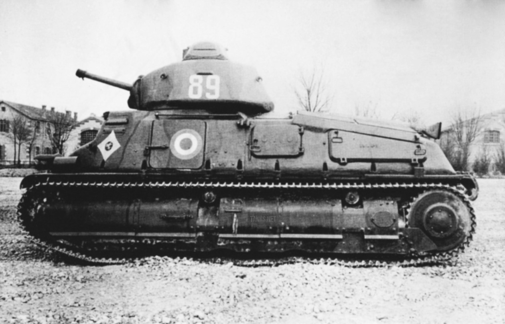

Czołg Francuski
SOMUA S35 miał wszystkie cechy charakteryzujące dobre czołgi, które sprawdziły się na polach bitewnych II wojny światowej. Był przyzwoicie opancerzony i uzbrojony, a do tego dysponował wystarczającą mobilnością – dobrą prędkością marszu pozwalającą na szybkie działania rajdowe i dużą zdolnością do pokonania terenu w razie potrzeby rozwinięcia natarcia na pozycje przeciwnika. Do 22 czerwca 1940 r., wyprodukowano 430 czołgów tego typu, z czego 288 wykorzystano do sformowania trzech lekkich dywizji zmechanizowanych (związków taktycznych mających zastąpić dywizje kawalerii), a pozostałe stanowiły rezerwę. Głównym konstruktorem czołgu był inż. Auguste Eugène Brillié (1863-1940), człowiek dość niezwykły. Był nie tylko konstruktorem francuskich czołgów i samochodów ciężarowych, ale wraz z przemysłowcem Gustave Gobron, opracował również pierwszy na świecie tłokowy silnik płaski (w układzie „bokser”). Eugène Brillié był także twórcą pierwszego francuskiego czołgu z okresu I wojny światowej– Schneider CA.

Opis czołgu
Następna Strona